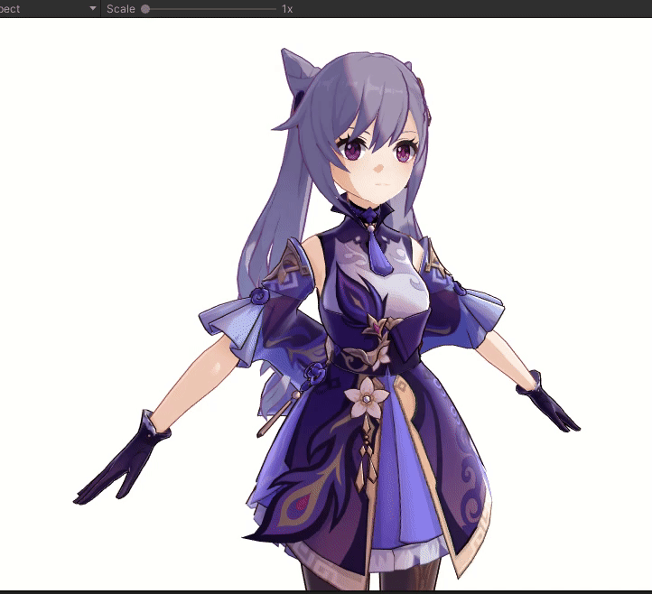
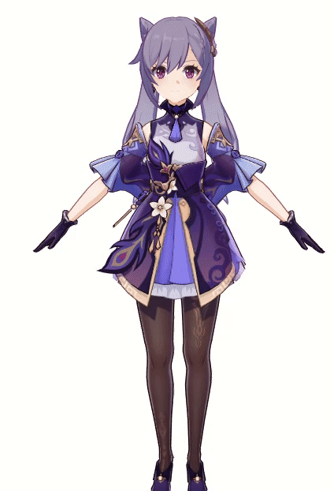
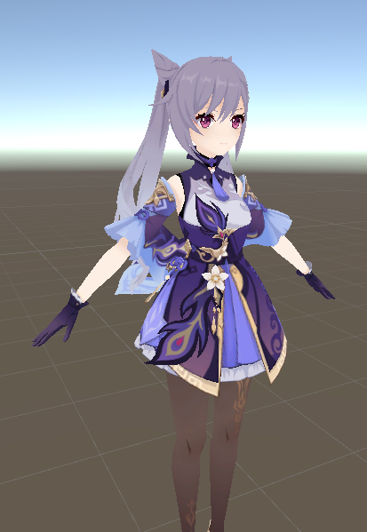
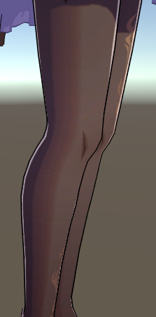
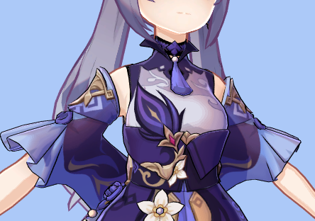

入坑原神后其实就在考虑尝试一下实现原神的卡渲效果作为练习，终于在八月实习之余抽了点时间实现了~
整体效果展示
按照惯例在开始前进行效果展示，头两张是展示整体效果的动图：



原神在工程里应该还加了一些后处理效果，比如说很明显就能看出来的bloom，但这些不是重点，就暂时不实现了。
开始前的准备
工程中用到的模型来自官网，，模型选的是我第一个六星老婆刻师傅。

把pmx格式转换了一下变成fbx，然后直接导入unity中。
资源中只有模型的basecolor贴图，我也没有尝试去找原神的逆向，因此本篇就是一个靠basecolor贴图硬莽出来的结果。
开始实现
实现的每一部分东西我都开了个帖详细说明，这个帖仅作贴最后的效果用。如果有人好奇实现过程的可以看看附上的链接。
梯度漫反射
描边
边缘光


面部阴影

头发高光
这部分其实没有用在模仿原神的效果中，因为观察感觉原神的头发高光其实是假高光，用上各向异性高光反而比较违和。但是个人对于各向异性头发高光比较感兴趣于是也实现了一下。